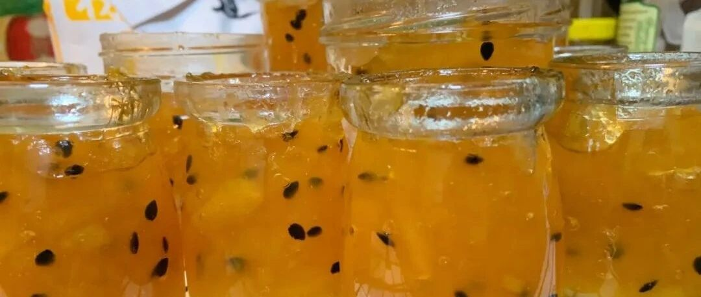

初冬的咕噜咕噜噜 - 百香果苹果酱
本来不想写了，这周紧急出差，周末还在加班，赶报告。想想还是写吧，时光总是匆匆，百香果和苹果都不等人呢……高铁上写的，感慨难免多一点点。
天气说冷就冷起来了，北京今天初雪，最红的一张图应该是这个：故宫门口的各位小主都已经准备好了呢（图源自网络，侵删）。还有神评论：反清复明取得阶段性成果，哈哈。

原来已经做了这么多酱酱酱酱啊。。。
除了专辑里面的，还有这两个：
说回来正经的。每年这个时候，我都特别喜欢熬酱或者做糖。淡黄色的灯光下，清冷的天气配着热乎乎的炉灶，锅里的小材料们咕噜噜咕噜噜说着胡话，真的是初冬时节最温暖的景象啊。
今天给大家介绍一个百香果苹果酱的方子，有一点偏甜，是为了抹吐司面包用的。我觉得苹果泡水喝，不管什么状态，都会有点怪怪的，所以想泡水的话，自己加百香果减糖量吧。
不管如何糖量不能低于苹果重量的40%，还是需要果胶的呢，毕竟不是熬苹果丁，而是酱。
如果没有搅拌机破壁机，就把苹果切小些。就算搅拌了，也不要太碎，保留一点点颗粒感，是制胜法宝。

这是熬制的整个过程，柠檬汁分两次加的，烧开过一次后，随便啥时候加。
百香果的籽我保留了，不喜欢的可以过滤一下，那么百香果数量需要增加几个。


所有加进去的水，最后都要熬的几乎没有了。所以不要加太多水，没过一点苹果即可，因为苹果本身也是要出水的。我喜欢留一点点水分，不要太酱了。冷却以后还会酱一点的。
中间因为水有点多，就舀出来一碗喝，真好喝啊！！！

一小时后。。。。。

就不太好估计做了多少，和苹果的重量有关，和最后熬的情况有关。


装瓶以后，立刻倒扣放凉，放入冰箱，两周内食用。

最近发现，我基本都是起床40分钟才能出门，因为会花一点时间好好吃早饭。天气冷了，也希望大家都能好好吃早饭，每一天都会是美好的一天，遇到的每个人都是好好的人，以共勉。